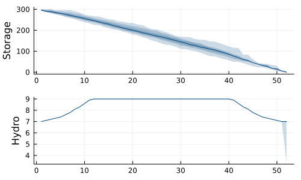
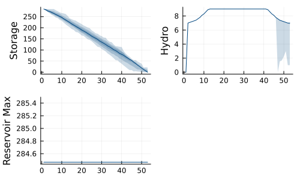
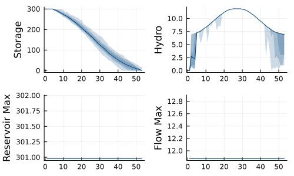
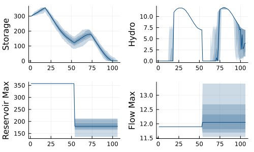
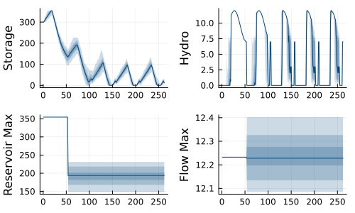
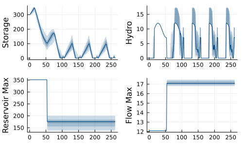
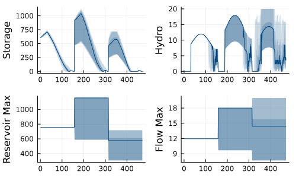

Example: capacity expansion models
This tutorial was generated using Literate.jl. Download the source as a .jl file. Download the source as a .ipynb file.
The purpose of this tutorial is to demonstrate a variety of capacity expansion problems. The models are intentionally provided with minimal description, you should be able to work out what is happening by studying the code.
This tutorial is an extension of the Example: deterministic to stochastic tutorial. We recommend you read that first.
Packages
This tutorial requires the following packages:
using JuMPusing SDDPimport CSVimport DataFramesimport HiGHSimport PlotsData
We use the same data from Example: deterministic to stochastic.
io = IOBuffer( """ week,inflow,demand,cost 1,3,7,10.2\n2,2,7.1,10.4\n3,3,7.2,10.6\n4,2,7.3,10.9\n5,3,7.4,11.2\n 6,2,7.6,11.5\n7,3,7.8,11.9\n8,2,8.1,12.3\n9,3,8.3,12.7\n10,2,8.6,13.1\n 11,3,8.9,13.6\n12,2,9.2,14\n13,3,9.5,14.5\n14,2,9.8,14.9\n15,3,10.1,15.3\n 16,2,10.4,15.8\n17,3,10.7,16.2\n18,2,10.9,16.6\n19,3,11.2,17\n20,3,11.4,17.4\n 21,3,11.6,17.7\n22,2,11.7,18\n23,3,11.8,18.3\n24,2,11.9,18.5\n25,3,12,18.7\n 26,2,12,18.9\n27,3,12,19\n28,2,11.9,19.1\n29,3,11.8,19.2\n30,2,11.7,19.2\n 31,3,11.6,19.2\n32,2,11.4,19.2\n33,3,11.2,19.1\n34,2,10.9,19\n35,3,10.7,18.9\n 36,2,10.4,18.8\n37,3,10.1,18.6\n38,2,9.8,18.5\n39,3,9.5,18.4\n40,3,9.2,18.2\n 41,2,8.9,18.1\n42,3,8.6,17.9\n43,2,8.3,17.8\n44,3,8.1,17.7\n45,2,7.8,17.6\n 46,3,7.6,17.5\n47,2,7.4,17.5\n48,3,7.3,17.5\n49,2,7.2,17.5\n50,3,7.1,17.6\n 51,3,7,17.7\n52,3,7,17.8\n """,)data = CSV.read(io, DataFrames.DataFrame)T = size(data, 1)reservoir_max = 350.0reservoir_initial = 300flow_max = 99The operational model
We use the operational problem from Example: deterministic to stochastic.
model = SDDP.LinearPolicyGraph(; stages = T, sense = :Min, lower_bound = 0.0, optimizer = HiGHS.Optimizer,) do sp, t @variable( sp, 0 <= x_storage <= reservoir_max, SDDP.State, initial_value = reservoir_initial, ) @variable(sp, 0 <= u_flow <= flow_max) @variable(sp, 0 <= u_thermal) @variable(sp, 0 <= u_spill) @variable(sp, ω_inflow) Ω, P = [-2, 0, 5], [0.3, 0.4, 0.3] SDDP.parameterize(sp, Ω, P) do ω fix(ω_inflow, data[t, :inflow] + ω) return end @constraint(sp, x_storage.out == x_storage.in - u_flow - u_spill + ω_inflow) @constraint(sp, u_flow + u_thermal == data[t, :demand]) @stageobjective(sp, data[t, :cost] * u_thermal) returnendA policy graph with 52 nodes.
Node indices: 1, ..., 52
Here's the graph:
# We need `open = false` to build the documentation. Remove if running locally.SDDP.plot(model, "model_capex_1.html"; open = false)Let's train and simulate:
SDDP.train(model; iteration_limit = 100)simulations = SDDP.simulate(model, 100, [:x_storage, :u_flow])Plots.plot( SDDP.publication_plot(simulations; ylabel = "Storage") do sim return sim[:x_storage].out end, SDDP.publication_plot(simulations; ylabel = "Hydro") do sim return sim[:u_flow] end; layout = (2, 1),)
Invest then operate
Our operational model assumes a fixed reservoir_max. Let's change this to an investment decision that we make before we operate the system.
model = SDDP.LinearPolicyGraph(; stages = T + 1, sense = :Min, lower_bound = 0.0, optimizer = HiGHS.Optimizer,) do sp, node @variable(sp, x_reservoir_max >= 0, SDDP.State, initial_value = 0) @variable(sp, x_storage >= 0, SDDP.State, initial_value = 0) @constraint(sp, x_storage.out <= x_reservoir_max.out) @variable(sp, 0 <= u_flow <= flow_max) @variable(sp, 0 <= u_thermal) @variable(sp, 0 <= u_spill) @variable(sp, ω_inflow) if node == 1 # Investment node @stageobjective(sp, x_reservoir_max.out) @constraint(sp, x_storage.out <= reservoir_initial) else # Operational node t = mod(node - 1, T + 1) @constraint(sp, x_reservoir_max.out == x_reservoir_max.in) Ω, P = [-2, 0, 5], [0.3, 0.4, 0.3] SDDP.parameterize(sp, Ω, P) do ω fix(ω_inflow, data[t, :inflow] + ω) return end @constraint( sp, x_storage.out == x_storage.in - u_flow - u_spill + ω_inflow ) @constraint(sp, u_flow + u_thermal == data[t, :demand]) @stageobjective(sp, data[t, :cost] * u_thermal) end returnendA policy graph with 53 nodes.
Node indices: 1, ..., 53
Here's the graph:
# We need `open = false` to build the documentation. Remove if running locally.SDDP.plot(model, "model_capex_2.html"; open = false)Let's train and simulate:
SDDP.train(model; iteration_limit = 100)simulations = SDDP.simulate(model, 100, [:x_storage, :u_flow, :x_reservoir_max])Plots.plot( SDDP.publication_plot(simulations; ylabel = "Storage") do sim return sim[:x_storage].out end, SDDP.publication_plot(simulations; ylabel = "Hydro") do sim return sim[:u_flow] end, SDDP.publication_plot(simulations; ylabel = "Reservoir Max") do sim return sim[:x_reservoir_max].out end; layout = (2, 2),)
Multiple investments
We can also make the flow_max an investment option. In general, any bound can be made into an investment decision. Add a new state variable. Penalize the cost of investment in a new node, and write appropriate constraints for the dynamics of the other state variables.
model = SDDP.LinearPolicyGraph(; stages = T + 1, sense = :Min, lower_bound = 0.0, optimizer = HiGHS.Optimizer,) do sp, node @variable(sp, x_reservoir_max >= 0, SDDP.State, initial_value = 0) @variable(sp, x_flow_max >= 0, SDDP.State, initial_value = 0) @variable(sp, x_storage >= 0, SDDP.State, initial_value = 0) @constraint(sp, x_storage.out <= x_reservoir_max.out) @variable(sp, 0 <= u_flow) @constraint(sp, u_flow <= x_flow_max.out) @variable(sp, 0 <= u_thermal) @variable(sp, 0 <= u_spill) @variable(sp, ω_inflow) if node == 1 # Investment node @stageobjective(sp, x_reservoir_max.out + x_flow_max.out) @constraint(sp, x_storage.out <= reservoir_initial) else # Operational node t = mod(node - 1, T + 1) @constraint(sp, x_reservoir_max.out == x_reservoir_max.in) @constraint(sp, x_flow_max.out == x_flow_max.in) Ω, P = [-2, 0, 5], [0.3, 0.4, 0.3] SDDP.parameterize(sp, Ω, P) do ω fix(ω_inflow, data[t, :inflow] + ω) return end @constraint( sp, x_storage.out == x_storage.in - u_flow - u_spill + ω_inflow ) @constraint(sp, u_flow + u_thermal == data[t, :demand]) @stageobjective(sp, data[t, :cost] * u_thermal) end returnendA policy graph with 53 nodes.
Node indices: 1, ..., 53
Here's the graph:
# We need `open = false` to build the documentation. Remove if running locally.SDDP.plot(model, "model_capex_3.html"; open = false)Let's train and simulate:
SDDP.train(model; iteration_limit = 100)simulations = SDDP.simulate( model, 100, [:x_storage, :u_flow, :x_reservoir_max, :x_flow_max],)Plots.plot( SDDP.publication_plot(simulations; ylabel = "Storage") do sim return sim[:x_storage].out end, SDDP.publication_plot(simulations; ylabel = "Hydro") do sim return sim[:u_flow] end, SDDP.publication_plot(simulations; ylabel = "Reservoir Max") do sim return sim[:x_reservoir_max].out end, SDDP.publication_plot(simulations; ylabel = "Flow Max") do sim return sim[:x_flow_max].out end; layout = (2, 2),)
Invest-operate-invest-operate
Now we present a model where we get to change our investments after one year. We now have two operational years, each of which is preceded by an investment node. We need to think carefully about the dynamics and cost of the second investment node.
model = SDDP.LinearPolicyGraph(; stages = 2 * T + 2, sense = :Min, lower_bound = 0.0, optimizer = HiGHS.Optimizer,) do sp, node @variable(sp, x_reservoir_max >= 0, SDDP.State, initial_value = 0) @variable(sp, x_flow_max >= 0, SDDP.State, initial_value = 0) @variable(sp, x_storage >= 0, SDDP.State, initial_value = 0) @constraint(sp, x_storage.out <= x_reservoir_max.out) @variable(sp, 0 <= u_flow) @constraint(sp, u_flow <= x_flow_max.out) @variable(sp, 0 <= u_thermal) @variable(sp, 0 <= u_spill) @variable(sp, ω_inflow) if node == 1 # First investment node @stageobjective(sp, x_reservoir_max.out + x_flow_max.out) @constraint(sp, x_storage.out <= reservoir_initial) elseif node == T + 2 # Second investment node @stageobjective( sp, (x_reservoir_max.out - x_reservoir_max.in) + (x_flow_max.out - x_flow_max.in), ) @constraint(sp, x_storage.out == x_storage.in) else # Operational node t = mod(node - 1, T + 1) @constraint(sp, x_reservoir_max.out == x_reservoir_max.in) @constraint(sp, x_flow_max.out == x_flow_max.in) Ω, P = [-2, 0, 5], [0.3, 0.4, 0.3] SDDP.parameterize(sp, Ω, P) do ω fix(ω_inflow, data[t, :inflow] + ω) return end @constraint( sp, x_storage.out == x_storage.in - u_flow - u_spill + ω_inflow ) @constraint(sp, u_flow + u_thermal == data[t, :demand]) @stageobjective(sp, data[t, :cost] * u_thermal) end returnendA policy graph with 106 nodes.
Node indices: 1, ..., 106
Here's the graph:
# We need `open = false` to build the documentation. Remove if running locally.SDDP.plot(model, "model_capex_4.html"; open = false)Let's train and simulate:
SDDP.train(model; iteration_limit = 100)simulations = SDDP.simulate( model, 100, [:x_storage, :u_flow, :x_reservoir_max, :x_flow_max],)Plots.plot( SDDP.publication_plot(simulations; ylabel = "Storage") do sim return sim[:x_storage].out end, SDDP.publication_plot(simulations; ylabel = "Hydro") do sim return sim[:u_flow] end, SDDP.publication_plot(simulations; ylabel = "Reservoir Max") do sim return sim[:x_reservoir_max].out end, SDDP.publication_plot(simulations; ylabel = "Flow Max") do sim return sim[:x_flow_max].out end; layout = (2, 2),)
Invest-operate-invest-operate-loop
Now we present a model where we enter an infinite horizon operational problem after being able to update our investments the second time. For this, we need a specialized policy graph:
graph = SDDP.LinearGraph(2 * T + 2)SDDP.add_edge(graph, 2 * T + 2 => T + 3, 0.95)model = SDDP.PolicyGraph( graph; sense = :Min, lower_bound = 0.0, optimizer = HiGHS.Optimizer,) do sp, node @variable(sp, x_reservoir_max >= 0, SDDP.State, initial_value = 0) @variable(sp, x_flow_max >= 0, SDDP.State, initial_value = 0) @variable(sp, x_storage >= 0, SDDP.State, initial_value = 0) @constraint(sp, x_storage.out <= x_reservoir_max.out) @variable(sp, 0 <= u_flow) @constraint(sp, u_flow <= x_flow_max.out) @variable(sp, 0 <= u_thermal) @variable(sp, 0 <= u_spill) @variable(sp, ω_inflow) if node == 1 # First investment node @stageobjective(sp, x_reservoir_max.out + x_flow_max.out) @constraint(sp, x_storage.out <= reservoir_initial) elseif node == T + 2 # Second investment node @stageobjective( sp, (x_reservoir_max.out - x_reservoir_max.in) + (x_flow_max.out - x_flow_max.in), ) @constraint(sp, x_storage.out == x_storage.in) else # Operational node t = mod(node - 1, T + 1) @constraint(sp, x_reservoir_max.out == x_reservoir_max.in) @constraint(sp, x_flow_max.out == x_flow_max.in) Ω, P = [-2, 0, 5], [0.3, 0.4, 0.3] SDDP.parameterize(sp, Ω, P) do ω fix(ω_inflow, data[t, :inflow] + ω) return end @constraint( sp, x_storage.out == x_storage.in - u_flow - u_spill + ω_inflow ) @constraint(sp, u_flow + u_thermal == data[t, :demand]) @stageobjective(sp, data[t, :cost] * u_thermal) end returnendA policy graph with 106 nodes.
Node indices: 1, ..., 106
Here's the graph:
# We need `open = false` to build the documentation. Remove if running locally.SDDP.plot(model, "model_capex_5.html"; open = false)Let's train and simulate:
SDDP.train(model; iteration_limit = 100)simulations = SDDP.simulate( model, 100, [:x_storage, :u_flow, :x_reservoir_max, :x_flow_max]; sampling_scheme = SDDP.InSampleMonteCarlo(; max_depth = 5 * T + 2, terminate_on_dummy_leaf = false, ),)Plots.plot( SDDP.publication_plot(simulations; ylabel = "Storage") do sim return sim[:x_storage].out end, SDDP.publication_plot(simulations; ylabel = "Hydro") do sim return sim[:u_flow] end, SDDP.publication_plot(simulations; ylabel = "Reservoir Max") do sim return sim[:x_reservoir_max].out end, SDDP.publication_plot(simulations; ylabel = "Flow Max") do sim return sim[:x_flow_max].out end; layout = (2, 2),)
Invest-operate-invest-operate-loop with strategic uncertainty
Now we present a model where we enter an infinite horizon operational problem after being able to update our investments the second time, but there are two possible cycles: one with regular inflows, and one with 50% high inflows and 50% higher demand.
graph = SDDP.Graph((:root, 0))SDDP.add_node(graph, (:invest_1, 0)) # First investmentSDDP.add_node(graph, (:invest_2, 0)) # Second investmentfor t in 1:52 SDDP.add_node(graph, (:Y1, t)) SDDP.add_node(graph, (:Y2_normal, t)) SDDP.add_node(graph, (:Y2_high, t))endfor t in 2:52 SDDP.add_edge(graph, (:Y1, t - 1) => (:Y1, t), 1.0) SDDP.add_edge(graph, (:Y2_normal, t - 1) => (:Y2_normal, t), 1.0) SDDP.add_edge(graph, (:Y2_high, t - 1) => (:Y2_high, t), 1.0)endSDDP.add_edge(graph, (:root, 0) => (:invest_1, 0), 1.0)SDDP.add_edge(graph, (:invest_1, 0) => (:Y1, 1), 1.0)SDDP.add_edge(graph, (:Y1, 52) => (:invest_2, 0), 0.9)SDDP.add_edge(graph, (:invest_2, 0) => (:Y2_normal, 1), 0.5)SDDP.add_edge(graph, (:invest_2, 0) => (:Y2_high, 1), 0.5)SDDP.add_edge(graph, (:Y2_normal, 52) => (:Y2_normal, 1), 0.9)SDDP.add_edge(graph, (:Y2_high, 52) => (:Y2_high, 1), 0.9)model = SDDP.PolicyGraph( graph; sense = :Min, lower_bound = 0.0, optimizer = HiGHS.Optimizer,) do sp, (node, t) @variable(sp, x_reservoir_max >= 0, SDDP.State, initial_value = 0) @variable(sp, 0 <= x_flow_max <= 20, SDDP.State, initial_value = 0) @variable(sp, x_storage >= 0, SDDP.State, initial_value = 0) @constraint(sp, x_storage.out <= x_reservoir_max.out) @variable(sp, 0 <= u_flow) @constraint(sp, u_flow <= x_flow_max.out) @variable(sp, 0 <= u_thermal) @variable(sp, 0 <= u_spill) @variable(sp, ω_inflow) if node == :invest_1 # First investment node @stageobjective(sp, x_reservoir_max.out + x_flow_max.out) @constraint(sp, x_storage.out <= reservoir_initial) elseif node == :invest_2 # Second investment node @stageobjective( sp, (x_reservoir_max.out - x_reservoir_max.in) + (x_flow_max.out - x_flow_max.in), ) @constraint(sp, x_storage.out == x_storage.in) else # Operational node @constraint(sp, x_reservoir_max.out == x_reservoir_max.in) @constraint(sp, x_flow_max.out == x_flow_max.in) Ω, P = [-2, 0, 5], [0.3, 0.4, 0.3] scale = node == :Y2_high ? 1.5 : 1.0 SDDP.parameterize(sp, Ω, P) do ω fix(ω_inflow, scale * data[t, :inflow] + ω) return end @constraint( sp, x_storage.out == x_storage.in - u_flow - u_spill + ω_inflow ) @constraint(sp, u_flow + u_thermal == scale * data[t, :demand]) @stageobjective(sp, data[t, :cost] * u_thermal) end returnendA policy graph with 158 nodes.
Node indices: (:Y2_high, 13), ..., (:Y2_normal, 33)
Here's the graph. The library we use for the node layout struggles here, but you should still be able to find the two separate loops in the second operational year.
# We need `open = false` to build the documentation. Remove if running locally.SDDP.plot(model, "model_capex_6.html"; open = false)Let's train and simulate (note that the results look bad because we haven't trained this to optimality in order for the documentation to build quickly).
SDDP.train(model; iteration_limit = 100)simulations = SDDP.simulate( model, 100, [:x_storage, :u_flow, :x_reservoir_max, :x_flow_max]; sampling_scheme = SDDP.InSampleMonteCarlo(; max_depth = 5 * 52 + 2, terminate_on_dummy_leaf = false, ),)Plots.plot( SDDP.publication_plot(simulations; ylabel = "Storage") do sim return sim[:x_storage].out end, SDDP.publication_plot(simulations; ylabel = "Hydro") do sim return sim[:u_flow] end, SDDP.publication_plot(simulations; ylabel = "Reservoir Max") do sim return sim[:x_reservoir_max].out end, SDDP.publication_plot(simulations; ylabel = "Flow Max") do sim return sim[:x_flow_max].out end; layout = (2, 2),)
Epicycles
Now we consider strategic level uncertainty as a scenario tree, each of which contains an infinite horizon subproblem. The strategic graph is:
T, p = 3, 0.9graph = SDDP.Graph((:root, 0))SDDP.add_node(graph, (:inv, 0))SDDP.add_node(graph, (:inv_h, 0))SDDP.add_node(graph, (:inv_l, 0))SDDP.add_node(graph, (:inv_hh, 0))SDDP.add_node(graph, (:inv_hl, 0))SDDP.add_node(graph, (:inv_lh, 0))SDDP.add_node(graph, (:inv_ll, 0))SDDP.add_edge(graph, (:root, 0) => (:inv, 0), 1.0)SDDP.add_edge(graph, (:inv, 0) => (:inv_h, 0), p^T / 2)SDDP.add_edge(graph, (:inv, 0) => (:inv_l, 0), p^T / 2)SDDP.add_edge(graph, (:inv_h, 0) => (:inv_hh, 0), p^T / 2)SDDP.add_edge(graph, (:inv_h, 0) => (:inv_hl, 0), p^T / 2)SDDP.add_edge(graph, (:inv_l, 0) => (:inv_lh, 0), p^T / 2)SDDP.add_edge(graph, (:inv_l, 0) => (:inv_ll, 0), p^T / 2)# We need `open = false` to build the documentation. Remove if running locally.SDDP.plot(graph, "model_capex_7.html"; open = false)To that we add an operational subproblem. We leave it as an exercise to the reader to understand the probabilities on the arcs.
SDDP.add_node(graph, (:op, 1))for t in 2:52 SDDP.add_node(graph, (:op, t)) SDDP.add_edge(graph, (:op, t - 1) => (:op, t), 1.0)endSDDP.add_edge(graph, (:op, 52) => (:op, 1), p)SDDP.add_edge(graph, (:inv, 0) => (:op, 1), T * (1 - p))SDDP.add_edge(graph, (:inv_h, 0) => (:op, 1), T * (1 - p))SDDP.add_edge(graph, (:inv_l, 0) => (:op, 1), T * (1 - p))SDDP.add_edge(graph, (:inv_hh, 0) => (:op, 1), 1.0)SDDP.add_edge(graph, (:inv_hl, 0) => (:op, 1), 1.0)SDDP.add_edge(graph, (:inv_lh, 0) => (:op, 1), 1.0)SDDP.add_edge(graph, (:inv_ll, 0) => (:op, 1), 1.0)# We need `open = false` to build the documentation. Remove if running locally.SDDP.plot(graph, "model_capex_8.html"; open = false)model = SDDP.PolicyGraph( graph; sense = :Min, lower_bound = 0.0, optimizer = HiGHS.Optimizer,) do sp, (node, t) # Investment state variables @variable(sp, x_reservoir_max >= 0, SDDP.State, initial_value = 0) @variable(sp, 0 <= x_flow_max <= 20, SDDP.State, initial_value = 0) # Reservoir state variables @variable(sp, x_storage >= 0, SDDP.State, initial_value = 0) # Demand state variables @variable(sp, x_scale, SDDP.State, initial_value = 1) # Control variables @variable(sp, u_flow >= 0) @variable(sp, u_thermal >= 0) @variable(sp, u_spill >= 0) # Random variables @variable(sp, ω_inflow) if t > 0 # Operational node @stageobjective(sp, data[t, :cost] * u_thermal) # Investment and demand states are fixed @constraint(sp, x_reservoir_max.out == x_reservoir_max.in) @constraint(sp, x_flow_max.out == x_flow_max.in) @constraint(sp, x_scale.out == x_scale.in) # Investments impact current decisions @constraint(sp, x_storage.out <= x_reservoir_max.out) @constraint(sp, u_flow <= x_flow_max.out) @constraint( sp, x_storage.out == x_storage.in - u_flow - u_spill + ω_inflow ) @constraint(sp, u_flow + u_thermal == x_scale.in * data[t, :demand]) # Random variable @constraint(sp, c_ω, ω_inflow - x_scale.in * data[t, :inflow] == 0) Ω, P = [-2, 0, 5], [0.3, 0.4, 0.3] SDDP.parameterize(sp, Ω, P) do ω set_normalized_coefficient(c_ω, x_scale.in, -(data[t, :inflow] + ω)) return end else # Investment node @stageobjective( sp, 12 * (x_reservoir_max.out - x_reservoir_max.in) + (x_flow_max.out - x_flow_max.in), ) # Assume reservoir starts out at 80% full @constraint(sp, x_storage.out == 0.8 * x_reservoir_max.out) # Update scale factors based on scenario tree if endswith("$node", "h") @constraint(sp, x_scale.out == 1.5 * x_scale.in) elseif endswith("$node", "l") @constraint(sp, x_scale.out == 0.8 * x_scale.in) else @constraint(sp, x_scale.out == x_scale.in) end end returnendA policy graph with 59 nodes.
Node indices: (:op, 22), ..., (:op, 29)
Let's train and simulate (note that the results look bad because we haven't trained this to optimality in order for the documentation to build quickly).
SDDP.train(model; iteration_limit = 200)function sample_scenario() D = SDDP.Noise.([-2, 0, 5], [0.3, 0.4, 0.3]) inv_1 = Symbol("inv_$(rand((:l, :h)))") inv_2 = Symbol("$(inv_1)$(rand((:l, :h)))") return vcat( ((:inv, 0), nothing), [((:op, t), SDDP.sample_noise(D)) for t in 1:52 for year in 1:T], ((inv_1, 0), nothing), [((:op, t), SDDP.sample_noise(D)) for t in 1:52 for year in 1:T], ((inv_2, 0), nothing), [((:op, t), SDDP.sample_noise(D)) for t in 1:52 for year in 1:T], )endsimulations = SDDP.simulate( model, 100, [:x_storage, :u_flow, :x_reservoir_max, :x_flow_max]; sampling_scheme = SDDP.Historical([sample_scenario() for _ in 1:100]),)Plots.plot( SDDP.publication_plot(simulations; ylabel = "Storage") do sim return sim[:x_storage].out end, SDDP.publication_plot(simulations; ylabel = "Hydro") do sim return sim[:u_flow] end, SDDP.publication_plot(simulations; ylabel = "Reservoir Max") do sim return sim[:x_reservoir_max].out end, SDDP.publication_plot(simulations; ylabel = "Flow Max") do sim return sim[:x_flow_max].out end; layout = (2, 2),)